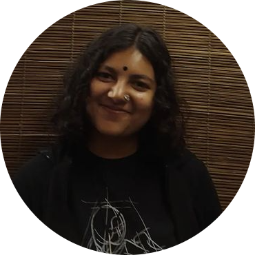

Music lover
এতো চাওয়া নিয়ে কোথা যাই?
| Email: | diya78214@gmail.com | ||
| Mobile: | 01331530684 |
| science | Birshrestha Noor Mohammad Public College, Dhaka. | 2023-2025 | |
| science | B.K.G.C.Govt.Girl's High School, Habiganj | 2015-2023 | |
| __ | The Roses K.g and High School | 2013-2015 |
Diya,A thousand kisses deep.
| 7 February 2007 | |
| Female | |
| Single | |
| Habiganj | |
| O+ |
| Member, Muktanchol literature Club,Habiganj, Bangladesh. | |
| Joint Secretary, BNMPC Drum Club. | |
| Organizing Secretary, National Children’s Task Force,Habiganj, Bangladesh. |
আমরা সবাই ভালোর দলে।